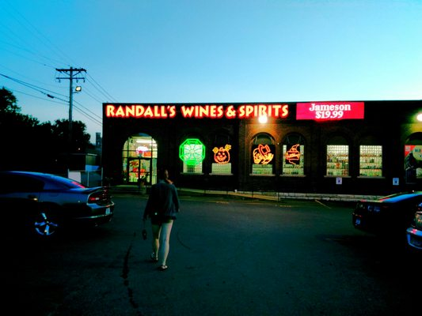

College
After completing high school at Chaminade College Prep In St. Louis, I attended Butler University in Indianapolis, Indiana. Majoring in what at the time was called Digital Media Production, with a minor in Strategic Communcation and Italian. My curriculum consisted of learning advertising and marketing, film, video editing, writing for print and web, basic web design, and of course learning the Italian language. I learned a ton but didn't really specialize in one area, which led to some troubles after graduating.

Minimum Wage
Life after college for me was pretty tough, without a specific direction to take my career I ended up being a jack of all trades and master of none. While I was applying for an endless amount of jobs, I worked a few different minimum wage jobs to make some cash while continuing to improve my portfolio and make connections. These jobs included working at as a cashier at a liquor store and even frying potato chips for a local artisan potato chip company.
Working at Randall's was a ton of fun and definitely an interesting experience. I learned about beer, wine, liquor, and how to interact with strangers, which definitely built my conversation skills. I interacted with people buying $100 bottles of wine and liquor, along with people who were buying dirt cheap booze with handfulls of change. Quite the juxtaposition! Oh yeah, and did I mention I got a great discount on the products?

At Billy Goat Chip Company, I sliced potatoes, dumped them in frying oil, and stirred the potato chips with a giant metal paddle as they fried in boiling oil, which resulted in many burns on my arms when the oil splashed! Not to mention the frying room was extremely hot and full of steam. After the chips fried, we seasoned them with a special blend of spices and let them dry. This was definitely one of my craziest jobs, as I worked from 4am to noon. Most nights I was asleep by 7pm!
Graphic Design
My first real "big boy" job was as a graphic designer at a local print shop called Hi-Tec Copy Center in University City. One day, I walked in with a resume in hand, considering the shop was down the street from my parents house where I was staying. The manager liked me, I came back for an interview, and ended up working there for 2 years. It was a tough job, and after a while the stress was really getting to me. I started applying for marketing jobs and ended up landing one. Years later, everything would come full circle, as I now live across the street from Hi-tec!

Marketing
After working in the print shop for over 2 years, I decided to branch out and try my hand at digital marketing. I ended up landing a job at an agency formerly called Marquette Group, where I ran pay-per-click ads for insurance agents, financial advisors, and many other industries!
Pay-per-click marketing took me a long way, and I ended up rapidly increasing my salary, learning a ton, and interacting with a ton of business owners and stakeholders. After Marquette Group (now called Mindstream Media), I worked for a small agency called Clix in Olivette, and then another boutique agency called Digital Strike, where I work currently!
Coding
As an introvert, conversing with clients, bosses and coworkers all day can be rather exhausting. There are parts about my job that I enjoy, but these are parts where I work by myself and analyze data, interpret the results, and optimize my campaigns. One of my former coworkers, Justin MacDonald, and even my brother's financee Erica Kaiser went through LaunchCode programs, and I knew that that was what I wanted to do too. I applied in Spring 2019 and unfortunately I didn't get into the program. I was really disheartened. Even though I didn't get in, I refused to give up and applied again in the Fall of 2019, and...
And now I am so happy to be writing this web page :)

"Success is no accident. It is hard work, perseverance, learning, studying, sacrifice and most of all, love of what you are doing or learning to do." - Pele
If you may be interested in learning coding and programming I encourage you to apply for the next session at Launchcode.org